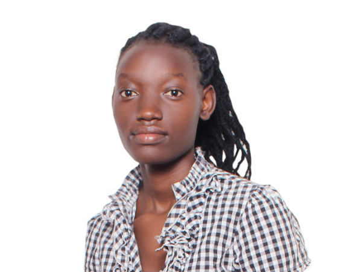

Brenda Econia: General Secretary
My name is Brenda Econia, I am a born of 1st-December-1995. I am an Orphan, my father was a police officer doing service to our country, I grew up living in the Police barracks which was more of a slum setting, since houses where packed with poor drainage systems. My Father died in line of duty in a motor accident caused by early mist and fog, He could no longer clearly see images that were in front, sideways and backwards, Him being the one driving during the incident, This left me and my siblings as partial Orphans, Our father was the bread winner of our family, and ever since he passed away, my mother could not take good care of us since she had a lot of responsibilities to take care of we the 5 children who happen to be my biological siblings. My Education and life was full of struggles trying to make ends meet but by the grace of God, I was able to attain basic formal education.
This spirit of volunteering and doing charity work become part of me because I too being a victim to such, I made a promise to God that if He lifts me and provides to me the basic needs in life, I will also use the small available resources to take care of the underprivileged like me to earn a sense of belonging in life by having basic education and a place they call home, I joined VIVCOM Foundation so that I can be the ‘‘voice of the voiceless’’ , The mother of the Orphans!
According to the latest statistics, over 840 million people worldwide are chronically undernourished. Every day, 26,000 young children die due to poverty, hunger, and preventable diseases. With so much of the world’s population in such lamentable condition, we respond by Giving generously to needy and do so without a grudging heart; then because of this the LORD your God will bless you in all your work and in everything you put your hand to” (Deuteronomy 15:10).
“Whoever is kind to the needy honors God!” Proverbs 14:31